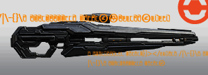
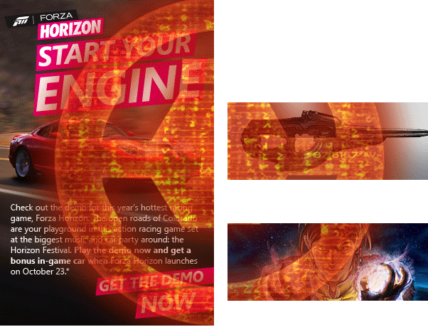
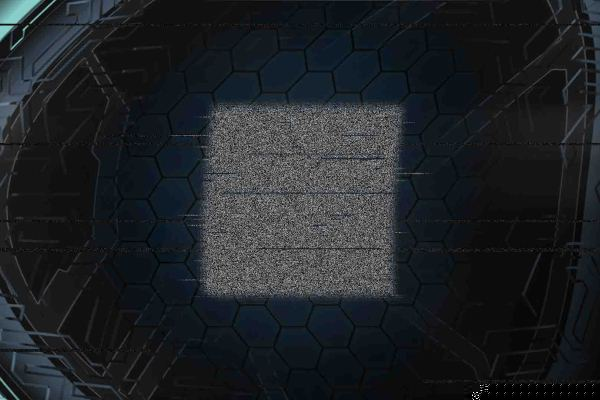

09.27.2012
10.04.2012
10.10.2012
PLNB PRIORITY TRANSMISSION [CLASSIFIED]
ENCRYPTION CODE: [CLASSIFIED]
PUBLIC KEY: N/A
FROM: CODENAME SURGEON
TO: CODENAME COALMINER
CLASSIFICATION: ELEVENTH HOUR [1/5]
SUBJECT: AFTERMATH
/FILE EXTRACTION-RECONSTITUTION COMPLETE/
/START FILE/
Decades from now, when historians evaluate the war, what will they say about us? Will they claim that our victory was ultimately fruitless? That it failed to secure a lasting peace, or worse, that it was only a prelude to far greater horrors that now lay ahead?
My hope – OUR HOPE – is that history would instead view this war as a catalyst. That the last thirty years were a crucible, a threshing floor for our species, sifting out our fears and frailties. And that ultimately it made us stronger and more vigilant in the end, fully prepared for whatever will come next. After all, what good is struggle if there is no change? What good is a fire if the sword is not made stronger?
Attached are four reports accounting the major contingency structures our species currently faces in the wake of the war. Please evaluate them closely. Their outcomes will dictate how history views us, or if history even views us at all.
Xenomorphic element [2/5]
Martial element [3/5]
Provenancial element [4/5]
Primogeniture element [5/5]
As Machiavelli once said: “the Romans, foreseeing troubles, dealt with them at once, and, even to avoid a war, would not let them come to a head, for they knew that war is not to be avoided, but is only put off to the advantage of others.”
Likewise, we must deal with these issues head-on, without fear and without hesitation. We can afford no other stance.
/END FILE/
10.12.2012
10.14.2012
Infinity Multiplayer Vidoc13:26

10.16.2012
10.17.2012
PLNB PRIORITY TRANSMISSION [CLASSIFIED]
ENCRYPTION CODE: [CLASSIFIED]
PUBLIC KEY: N/A
FROM: CODENAME SURGEON
TO: CODENAME COALMINER
CLASSIFICATION: ELEVENTH HOUR [2/5]
SUBJECT: OVER THE FENCE
/FILE EXTRACTION-RECONSTITUTION COMPLETE/
/START FILE/
SPECIES CANDIDATE//LINE RECORD 94:73:02:75
UNGGOY// Sensors at Balaho indicate stability, no off-planet transport recorded since Solipsis. Runners are claiming that Buwan has been abandoned as well, but we’re keeping our eyes on it anyway. Moderate Unggoy populations have been observed in Sangheilian systems at various intervals.
KIG-YAR// Eayn’s native population continues to grow and expand within reasonable governing parameters; its economic and social lines have stabilized in the wake of the war. Muloqt, Kaelarot, and Valyanop, the primary interplanetary colonial sites, all remain static, with little notable movement. There are rumors of mercenaries operating alongside a handful of more conservative Sangheili states, although that has yet to be substantiated.
SANGHEILI// Most intel here originates from ground contacts, but sensors have assisted with validation. The primary issue with the Sangheili is that of discordant cultural symmetry. It is difficult to assess military growth across several dozen active colonial vectors all with disparate political structures. Nevertheless, any and all visible military activity appears to be internecine in nature.
NOTE: A cluster of Sangheili frontier worlds saw a sudden and anomalous convergence of unregistered ships, largely cruisers of varying classes according to a handful of remote relays stationed nearby. By the time sensors were deployed, the ships were gone. The relays can’t assess numbers or strength, but the readings we have indicate that this wasn’t an expeditionary voyage or something tied to a single state. It appears to have been much larger.
/END FILE/
10.18.2012
10.20.2012
Glacier Video0:23
05
10.21.2012
Butterfly Video0:19
11
10.22.2012
Xbox Engage Newsletter
10.23.2012
Lethbridge Industrial site goes rampant10.24.2012
Hoover Dam Video0:19
20